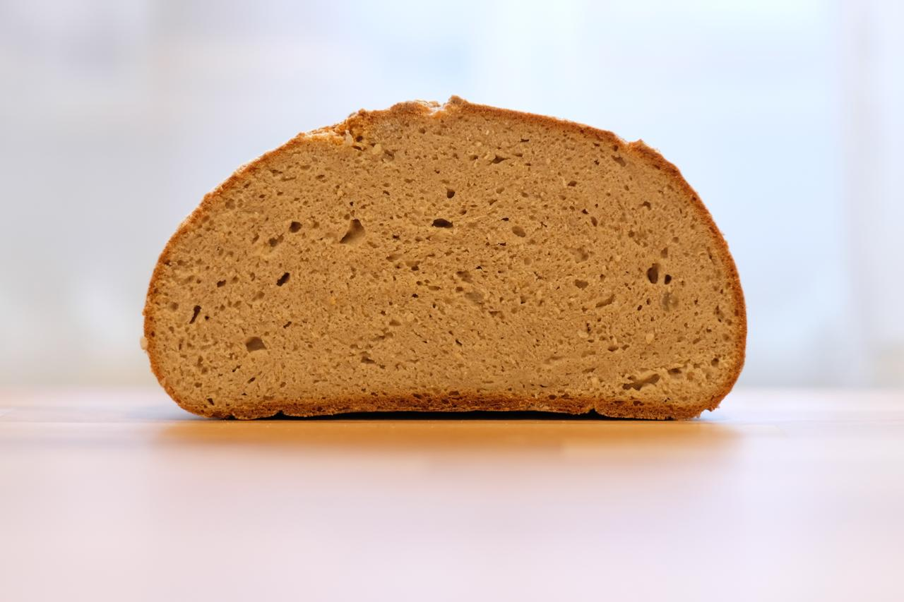

Gesunde Rezepte für Sauerteigbrot und Weiteres
Glutenfreies Brot, kann man das so hinbekommen, dass es eine tolle Kruste wie ein normales Brot hat? Ist glutenfreies Brot so locker und luftig? Wie schmeckt das dann überhaupt? Ich habe selbst noch nie glutenfreies Brot gemacht. Aber das mal auszuprobieren, ist sehr spannend! Es gibt so viele unterschiedliche glutenfreie Getreidesorten, die alle einen unterschiedlichen Charakter haben. Hier habe ich mich für Buchweizen und Kichererbsen entschieden, die ich frisch in meiner Getreidemühle gemahlen habe (Achtung: Kichererbsten erst auf grober Stufe zerkeinern und dann erst zu Mehl verarbeiten, um die Mühle nicht zu beschädigen). Man findet diese aber auch als Mehl in Bioläden. Unter dem Rezept ist eine alternative Vorgehensweise mit Hefe.
An Vorabend
Alle Zutaten für den Sauerteig mischen und abgedeckt über Nacht, also etwa 8 Stunden gehen lassen. Für ein 100\%ig glutenfreies Brot hier natürlich den selbstaufgezogenen glutenfreien Sauerteig verwenden, der vor dem Backen mindestens 2 mal gefüttert wurde.
Am Backmorgen
Alle trockenen Zutaten in eine große Teigschüssel geben und mit einem Schneebesen gut vermischen. Dies ist wichtig, denn das Xanthan bindet sehr schnell bei Zugabe von Wasser. Durch das Vermischen entstehen also keine Klümpchen. Dann Sauerteig und etwa 400 g Wasser hinzugeben und mit einer Hand gut vermischen, bis ein zäher Teig entsteht (alternativ in der Küchenmaschine mit dem Flachrührer/K-Haken). Wer schoneinmal ein reines Roggenbrot gebacken hat, kennt die Textur dieses Teiges. Der Teig sollte sich einfach dehnen und falten lassen, also wenn nötig noch bis zu 100 ml mehr Wasser reingeben. Ich habe etwa 450 g verwendet.
Abgedeckt nun 2 Stunden gehen lassen, währenddessen 2 bis 3 mal dehnen und falten. Dies scheint erstmal unnötig, da keines der Mehle Gluten enthält, aber so stellen wir sicher, dass sich die Luftblasen gut im Teig verteilen und nachher das Brot schön gleichmäßig und feinporig aufgeht.
Ein rundes Gärkörbchen mit Reismehl (oder Buchweizenmehl) bemehlen und den Teig auf eine leicht bemehlte Arbeitsfläche geben. Vorsichtig mit ebenfalls bemehlten Händen rundwirken und mit der glatten Seite nach unten in den Korb setzen. Nochmals eine Stunde aufgehen lassen.
Währenddessen einen Gusseisentopf bei 250 Grad im Ofen mindestens 45 Minuten aufheizen. Nach der Gehzeit den Teigling auf ein Stück Backpapier stützen und mithilfe des Papiers vorsichtig in den Gusseisentopf setzen und direkt den Deckel draufsetzen.
Bei 250 Grad etwa 20 Minuten backen, den Deckel abnehmen, dann weitere 30 bis 40 Minuten bei 210 Grad backen, bis das Brot die gewünschte Bräunung hat. Vor dem Anschneiden vollständig abkühlen lassen.

Tipps